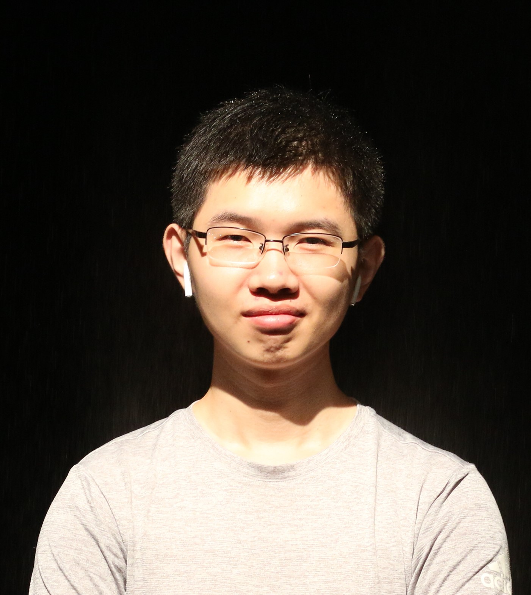

Feng Gao (高枫)
|  | 1st-year Master student Email: gaof-19@mails.tsinghua.edu.cn Room 502&503, Building 2, Shuangqing Building, Find me at My Blog or: 


|
[07/2019] I receive my B.Eng in Electronic Engineering and will continue my M.Eng in Tsinghua University, advised by Prof. Yu Wang.
[03/2019] My homepage is born!
[09/2018] I have been admitted by Tsinghua University as a Master student (from Fall 2019)!
About me
I'm currently 1st-year Master student at EE department of Tsinghua University, advised by Prof. Yu Wang. Previously, I received my B.Eng in Electronic Engineering here in 2019.
I was fortunate to be a Research & Development intern at Momenta in 2018 Summer, working on the construction of the autonomous driving simulation system. Since September 2018, I have been working in the Robot Group of NICS-EFC Lab, interested in Single-robot Intelligence and Multi-robot Collaboration. More specifically, I focus on Decentralized SLAM now, where “SLAM” is a type of algorithms that let robots know “where am I”, and “decentralized” (or “distributed”) refers to speeding up work and expanding application scenarios by running multiple robots simultaneously.
Education
M.Eng in Electronic Engineering 2019 – 2021 (Expected)
EE Department, Tsinghua University, Beijing, China
Advisor: Prof. Yu WangB.Eng in Electronic Engineering 2015 – 2019
EE Department, Tsinghua University, Beijing, China
Advisor: Prof. Yu Wang
Work Experience
Research Assistant @ Tsinghua University Sep. 2018 – Now
Energy Efficient Computing Group, Advisor: Prof. Yu WangResearch & Development Intern @ Momenta Apr. 2018 – Aug. 2018
Simulation Group, Mentor: Zizhe XuResearch Assistant @ Tsinghua University Apr. 2018 – Aug. 2018
Future Communications & Internet Lab, Advisor: Prof. Yong LiResearch Assistant @ Tsinghua University Apr. 2017 – Mar. 2018
Speech Processing and Machine Intelligence Lab, Advisor: Prof. Zhijian Ou
Publications
Pre-print
CNN-based Monocular Decentralized SLAM on embedded FPGA,
Jincheng Yu, Feng Gao, Jianfei Cao, Chao Yu, Zhaoliang Zhang, Lu Tian, Zhengfeng Huang, Yu Wang and Huazhong Yang,
(paper)
Conference
Angular Softmax Loss for End-to-End Speaker Verification,
Yutian Li, Feng Gao, Zhijian Ou, Jiasong Sun,
In the 11th International Symposium on Chinese Spoken Language Processing (ISCSLP’18). November 26-29, 2018, Taipei, Taiwan.
(Best Student Paper Award) (paper)
{kind=link}